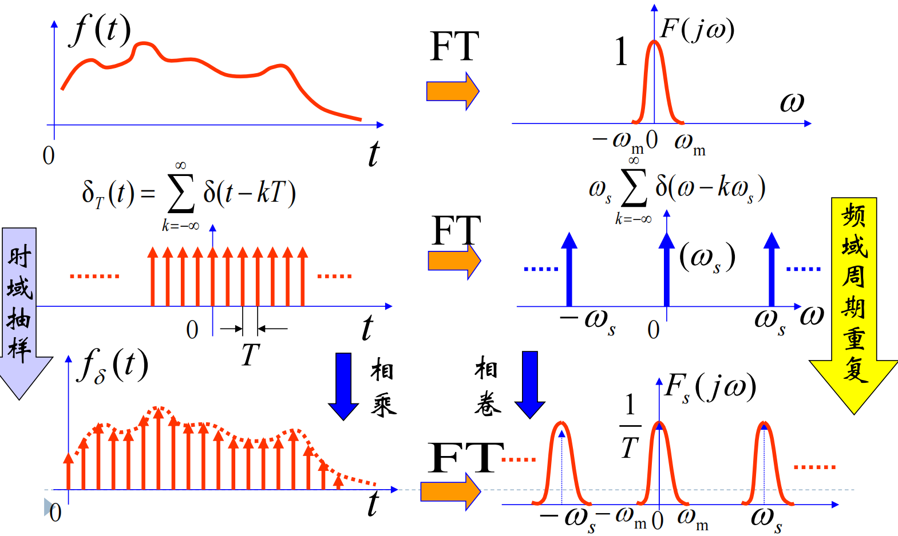
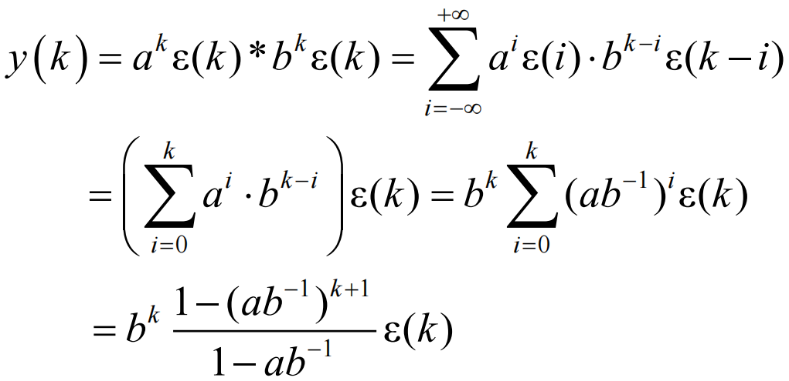
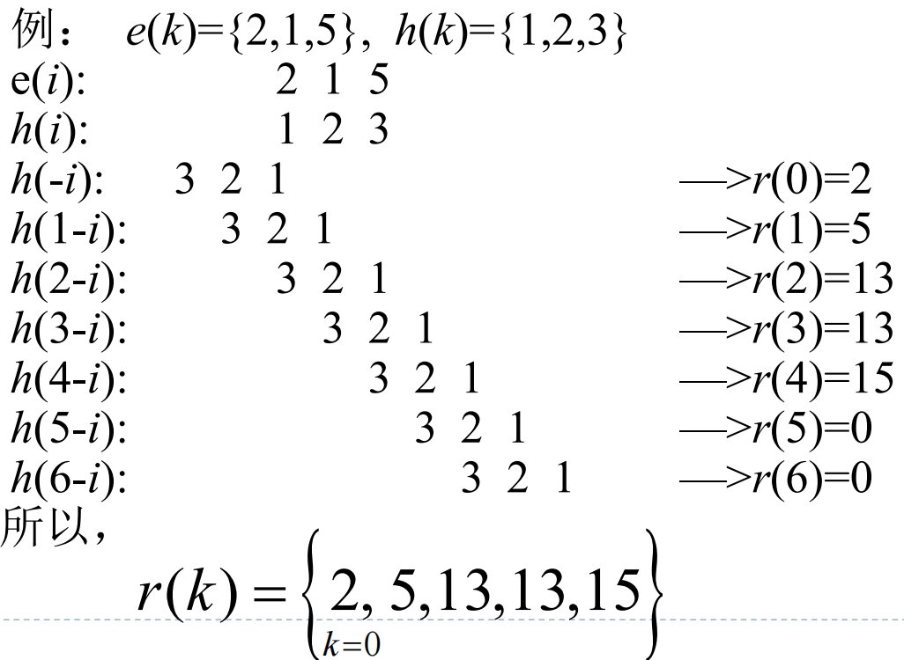
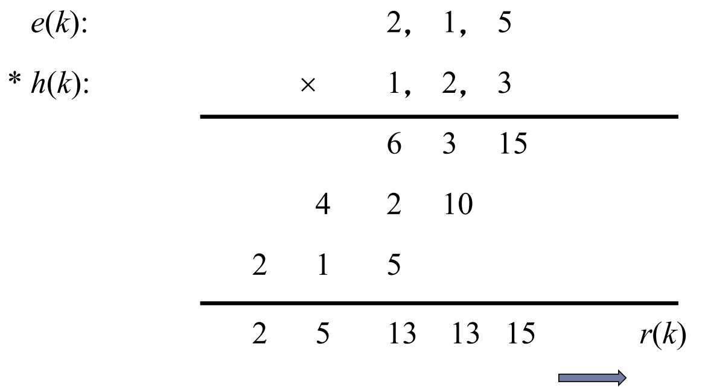

第四部分 离散时间系统时域分析
I. 相关概念
- 离散时间系统的表示方式: 时间函数 f(k).
- 理论上应表示为 f(kT), 将 k 视作与时间等价的序号.
- 数值按序排列, 在第一位上方标明序号. 例如: f(k)={k=0f1,f2,…}.
- 典型信号:
- 单位函数. 注: 与冲激函数不同, 函数值均为有限值. δ(k)={10k=0k=0.
- 单位阶跃函数. 与连续时间系统相同.
- 单边指数序列. akε(k).
- 单边正弦序列. cos(ωk+φ)ε(k).
- 离散信号的运算:
- 加法, 乘法与连续信号类似.
- 移序运算: f(k)=f1(k−n).
- n>0: 右移, 减序.
- n<0: 左移, 增序.
- 离散信号的性质:
- 线性性: a1e(k)+a2e(k)↔a1r1(k)+a2r2(k).
- 非移变性: e(k−n)↔r(k−n).
II. 抽样信号与抽样定理
- 理想抽样: fδ(t)=f(t)δT(t)=∑k=−∞+∞f(t)δ(t−kT).
- T: 抽样周期.
- ωs=T2π: 抽样频率.
- 抽样信号频谱: Fδ(jω)=T1∑F[j(ω−kωs)].

- ωs≥2ωm 时, 周期化后的频谱不会重叠.
- 2fm=πωm 为最小抽样频率, 称为Nyquist(奈奎斯特)抽样频率. 对应的周期 2fm1 称为Nyquist抽样周期.
- Nyquist抽样定理: 对于最大频率为 fm 的信号, 可以由抽样周期小于Nyquist采样周期的采样值序列唯一确定. 这样的采样信号通过LPF后, 原信号可完全重建.
- ωs<ωm 的情况称为欠采样.
- 信号的重建: 通过理想低通滤波器. (在时域上, 有时域内插公式, 即ILPF响应的卷积形式) 重建产生的误差如下:
- 理想低通滤波器不存在.
- 严格带限信号不存在.
- 对于前两个误差, 可以通过提高采样频率解决. 因为在频域中, 提高采样频率可以增加两个频带之间的距离.
- 理想抽样不存在. 在现实中, 有如下抽样类型.
- 自然抽样. 利用开关电路等进行抽样, 实际抽样信号为方波. 其结果与脉冲幅度调制类似, 得到的频谱函数为 Sa 包络.
- 平顶抽样. 在采样后保持一段时间. 频谱的形状将发生变化.
III. 离散时间系统的描述与模拟
- 数学模型: 差分方程.
- 一般形式: r(k+n)+an−1r(k+n−1)+⋯+a0r(k)=bme(k+m)+⋯+b0e(k).
- 前向方程(预测): y(k+1)+ay(k)=be(k).
- 后向方程(滤波): y(k−1)+ay(k)=be(k).
- 通常使用前向方程进行求解.
- 物理描述: 框图.
- 与连续时间系统的形式完全相同, 只是积分器更改为了移序器(减序), 中间用负号 D 表示.
IV. 离散时间系统零输入响应
主要采用时域经典法求解.
- 移序算子: 引入算子 S, 满足 Sy(k)=y(k+1), S1y(k)=y(k−1).
- 类似微分算子 p, 可以写出转移函数 H(S).
- 零状态响应方程可以写作 D(S)y(k)=0 的形式.
- 求解方法:
- 将方程写作 D(S)y(k)=0 的形式, 求解 D(s)=0 解的特征根 vi.
- 无重根解的形式: rzi(k)=∑civik.
- 有重根解的形式: rzi(k)=∑(c1+c2k+⋯+cmkm−1)v1k+⋯+cnvnk.
- 对减序方程, 先将其转换为增序方程再求解.
- 注: 通过题给方程迭代求初始条件. 例如, 通过迭代由 y(−1) 求得 y(0).
V. 离散时间系统零状态响应与全响应
主要采用时域卷积和法求解.
- 原理: 与连续时间系统近代时域法类似.
- 对于任意激励, 有 e(k)=e(k)∗δ(k).
- 对于任意响应, 有 r(k)=e(k)∗h(k). 其中 h(k) 为单位函数响应.
卷积和的计算
- 解析法: a(k)∗b(k)=i=−∞∑+∞a(i)b(k−i).
- 求解过程中, 可能涉及等比数列的求和.
- 解析法是最保险的求解方法.
- 例子:

- 图解法: 采用反褶, 平移, 相乘, 叠加的步骤.
- 注意: 需要对结果数列的首项序号进行标注.
- 例子:

- 不进位的多项式乘法: 对两个数列列出乘法的竖式.
- 注意: 若数列不从 k=0 项开始, 需对乘数进行平移.
- 例子:

卷积和的性质
- C(k)=A(k)∗B(k), 若 A(k),B(k) 的长度分别为 NA,NB, 则有 Nc=NA+NB−1.
- 移序性质. x1(k−m)∗x2(k−n)=y(k−m−n).
- 代数性质: 交换律, 结合律, 分配律.
单位函数响应求解
求解步骤如下.
- 由方程得到 H(S)=E(S)R(S).
- 将转移函数 H(S) 进行部分分式展开.
- 假分式的情况: 系统是非因果的. 不考虑这种系统.
- 存在常数项的情况: 对应的响应为单位函数 δ(k) 的倍数.
- 真分式的情况: 可以分解为若干个一阶子系统.
- 一阶子系统的求解:
- 无重根的情况:
- H(s)=s−v1, r(k)=vk−1ε(k−1).
- H(s)=s−vs, r(k)=vkε(k).
- 有重根的情况:
- H(S)=(S−v)n1, r(k)=(n−1)!(k−n)!(k−1)!vk−nε(k−1).
- H(S)=(S−v)nSδ(k), r(k)=(n−1)!(k−n+1)!k!vk−n+1ε(k).
- 特别地, (s−v)21δ(k)→(k−1)vk−2ε(k−1).
- 可以看出, 当分子由 1 换为 S 时, 所有 k 项向左移序一个单位.
时域稳定性判断
- 对零输入响应, 通过特征根的模值 ∣v∣ 判断即可.
- ∣v∣<1: k→∞limvk=0, 系统稳定.
- ∣v∣>1: 同理, 系统不稳定.
- ∣v∣=1: 在单位圆上无重根时, 临界稳定. 有重根时, 不稳定.
- 零状态响应: 单位函数响应连续可和时, 系统稳定. 即 ∑k=−∞+∞∣h(k)∣<∞.